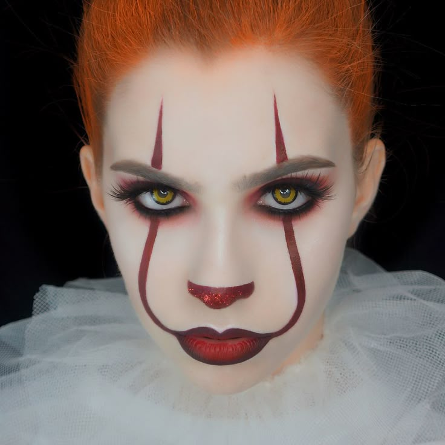
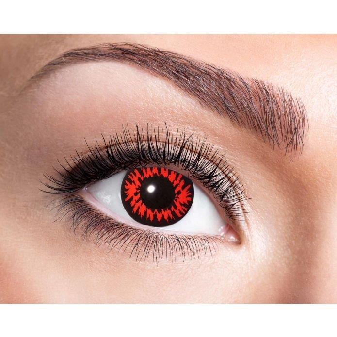

Como melhorar o teu disfarce de halloween
Se achas que o teu disfarce de halloween está muito simples ou pouco assustador, aqui vão algumas sugestões que o vão melhorar
- Maquilhagem específica

- Feridas falsas
- Lentes de olhos coloridas (vermelhas/brancas...)

- Sangue falso
- Gestos e movimentos específicos da personagem